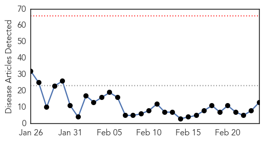
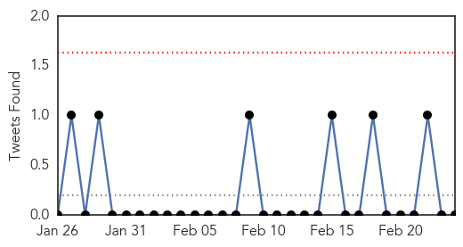

30 Day Trends
Web: 0 alerts, 0 warnings
Twitter: 0 alerts, 0 warnings
Top Articles:
- 0.999
- H1N1 Influenza: Measures Taken By India To Fight Swine Flu
- 0.999
- Statement by Shri Jagat Prakash Nadda Union Minister of Health Family
- 0.997
- Intensifying the Battle against Bird Flu, Articles
- 0.989
- Swine Flu: 'Health Ministry has sent teams to assist state govts', says Nadda
- 0.986
- Swine Flu: 'Health Ministry has sent teams to assist state govts', says Nadda
- 0.978
- Achieving community immunity against flu, one school at a time
- 0.974
- Centre recommends swine flu vaccination for healthcare workers
- 0.867
- Gerbils, Not Rats Behind Spread of Black Death
- 0.810
- Only About Children childcare centre worker develops tuberculosis: nine show signs
- 0.751
- February 23, 2015 Archives
- 0.751
- February 23, 2015 Archives
- 0.751
- February 23, 2015 Archives
- 0.684
- Update on imported human case of avian influenza A(H7N9)
Top Tweets:
-
No tweets found for Feb 24, 2015
Web/News Articles
Tweets
Article Locations

Article Confidences